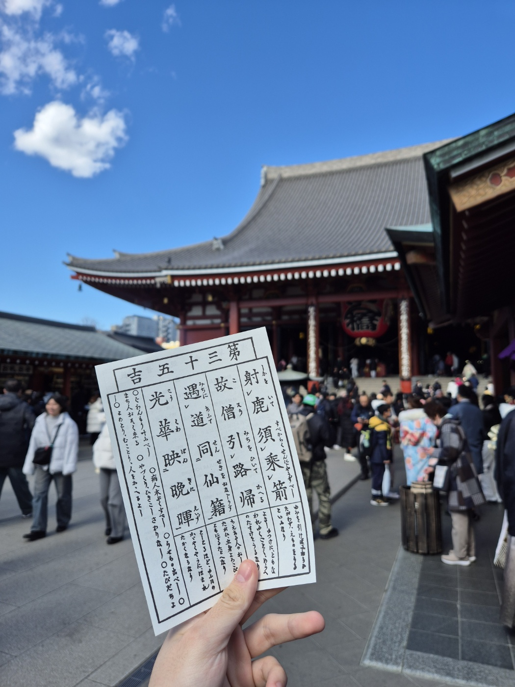
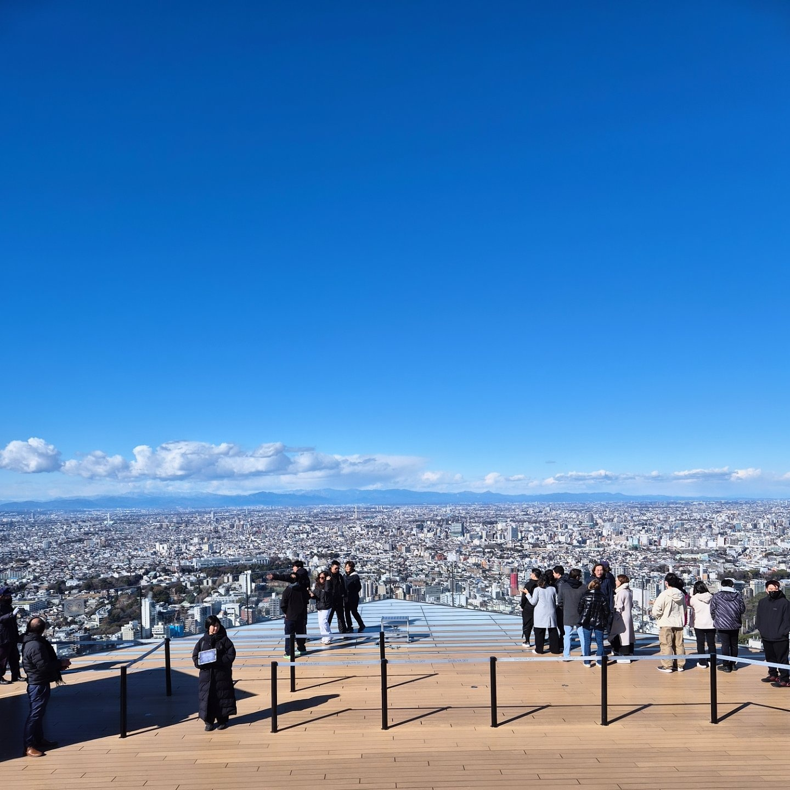
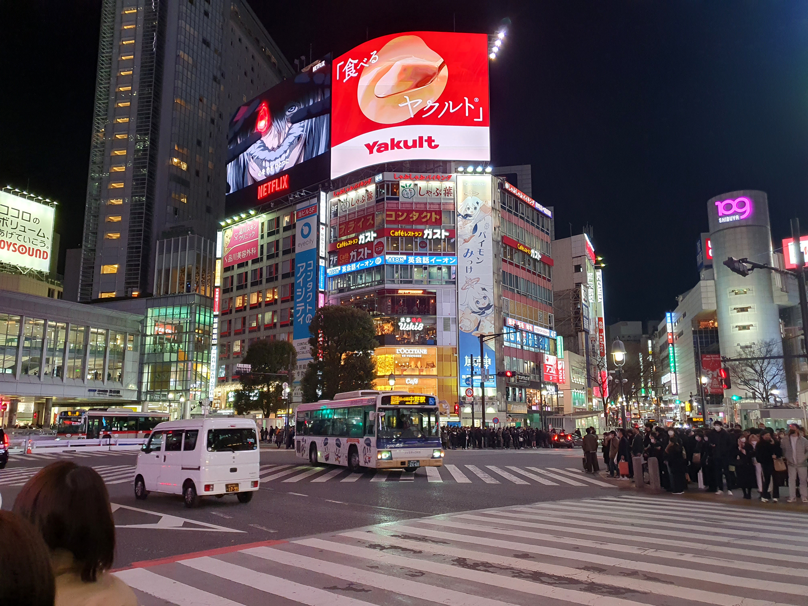
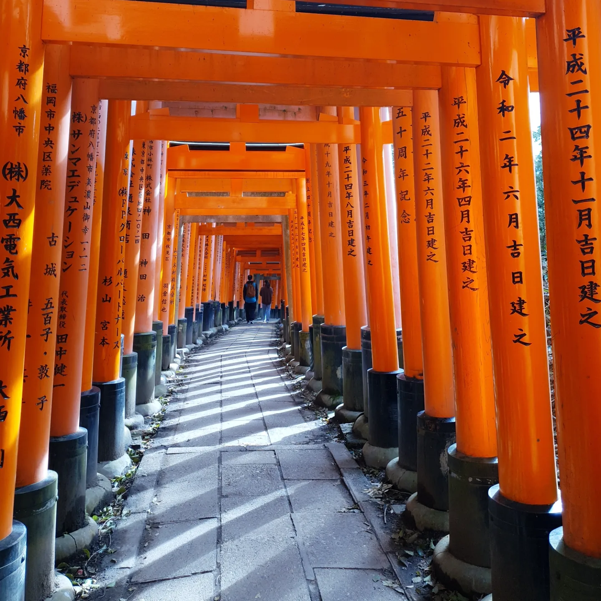
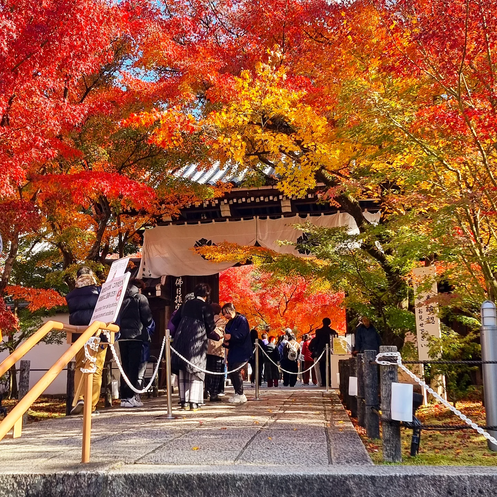

도쿄
첫 번째로, 도쿄의 가장 유명한 여행지인 센소지입니다.
아사쿠사에 위치한 도쿄 최고(最古) 사찰로,일본 도쿄를 대표하는 관광지이며, 입장료가 없어 매우 많은 관관객들이 방문합니다.
628년 바다에서 건져올린 관세음보살을 모시기 위하여 세운 절이라는 전설이 있습니다.
센소지 앞으로 놓인 포차들이 매우 다양하여 구경하는 재미가 있습니다.
1년 운세를 뽑을 수도 있으니 꼭 대길을 뽑아봅시다.
두 번째로, 도쿄의 시부야에 위치한 시부야 전망대입니다.
 시부야 스카이는 시부야 스크램블 스퀘어 타워 47층(최상층)에 있는, 높이 229미터의 전망대입니다.
스크램블 교차로, 롯폰기 힐스 등 도쿄의 유명한 명소들은 거의 다 볼 수 있는 옥상 전망대입니다.
멋진 시티뷰와 더불어 다양한 볼거리와 액티비티도 있으니 시간을 내서 가보는 것을 추천드립니다.
참고로 비가 온다면 전망대를 이용하지 못하니 꼭 날씨를 확인하고 맑은 날에 가시는 것을 추천합니다.
마지막으로, 도쿄 중심에 존재하는 고쿄(황거)입니다.

일왕이 거주하는 공간으로, 막부 시절 에도성으로 불리었으며 메이지 유신이 시작된 1868년 이후 메이지 일왕이 에도성에 입성한 이후 도케이 성으로 개명.
제2차 세계대전 이후 황거라는 이름으로 명칭하였습니다.
도쿄역과 인접하게 위치하고 있어서 도쿄 여행을 시작, 혹은 마무리 하는 날 가볍게 산책하며 둘러보기 좋은 곳입니다.
성의 해자를 따라 배를 타고 주변을 돌아보는 것도 가능하며, 일본인 가족들도 많이 찾는 편안한 공간입니다.
하지만 예약을 하지 않으면 궁 내부를 모두 돌아보는 것이 불가능하기에 자세한 투어를 하고싶다면 6개월 전 예약은 필수입니다.
교토
첫 번째로, 교토의 대표 관광지로 꼽히는 사찰인 기요미즈데라(청수사)입니다.

나라 시대인 778년 창건된 사찰로 '물이 맑은 절'이라는 뜻을 가지고 있습니다.
수없이 많은 세월동안 소실과 복원을 반복하였으며, 시간을 담은 목조의 매력을 느낄 수 있는 사찰입니다.
저는 가을에 한번, 겨울에 한번 방문하였는데 계절에 따라 느껴지는 특색있는 매력이 존재하는 곳이기에
계절에 따라 달라지는 기요미즈데라의 매력을 비교해보는 것도 좋을 것 같습니다.
두 번째로, 교토의 유명 포토 스팟이자 인스타 명소로 유명해진 후시미 이나리 신사입니다.
풍년과 사업의 신인 이나리 신을 모시는 이나리 신사의 총본산이며 1만개가 넘는 토리이가 길을 따라 나열되어 있는 모습은 일본을 떠올리게 하는 가장 상징적인 이미지라고도 불립니다.
산 정상으로 향하는 산책로 전부가 토리이로 가득한 모습은 사진으로 꼭 남기고 싶게 만드는 매력을 지니고 있습니다.
강렬한 색상의 토리이가 끝없이 나열된 배경을 바탕으로 인생사진 찍기 좋은 포토 스팟이 아닐까 싶습니다.
하지만 산 정상까지 가는데에 1시간이 넘게 걸리고 경사가 꽤 있어서 채력이 약하신 분들은 굳이 끝까지 안올라가셔도 무방하다 생각합니다.
마지막으로, "가을하면 에이칸도"라는 말로 유명한 그 에이칸도(젠린지)입니다.
본래 어느 귀족의 개인 사저였으나, 853년 소유주인 귀족이 한 승려에게 선물로 주었다고 알려진 건축물입니다.
불교의 색이 녹아난 엔틱하면서 단조로운 나무 건축물과, 색체의 끝을 보여주는 가지 각색의 단풍의 대비가 정말 아름다웠으며,
다른 나라에서는 찾아볼 수 없는 아름다운 단풍을 볼 수 있는 명소입니다.
만약 가을에 교토를 간다면 에이칸도는 정말 추천드립니다.
표로 보는 각 여행지의 입장료와 추천 계절
한 눈에 각 관광 명소의 입장료와 추천 계절에 대하여 설명해드리겠습니다.
| 관광지 | 위치 | 입장료 | 추천 계절 |
|---|---|---|---|
| 센소지 | 도쿄 | 무료 | 봄 |
| 시부야스카이 | 2200엔 (성인) | 봄, 가을 | |
| 고쿄 | 무료(투어 제외) | ||
| 청수사 | 교토 | 500엔 | 가을, 겨울 |
| 에이칸도 | 가을 | ||
| 후시미이나리신사 | 무료 | ||
| 목차로 이동 | |||